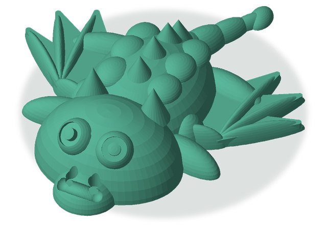
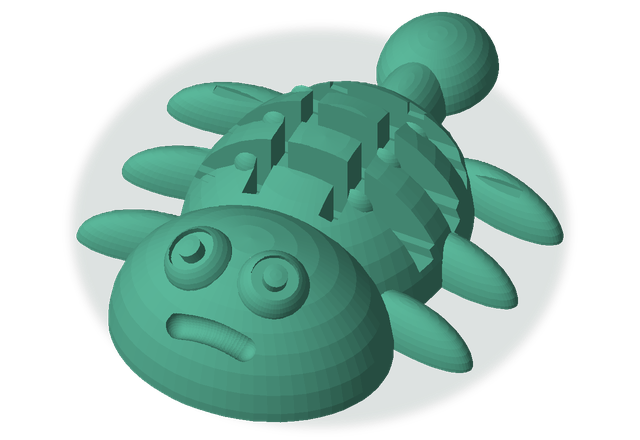
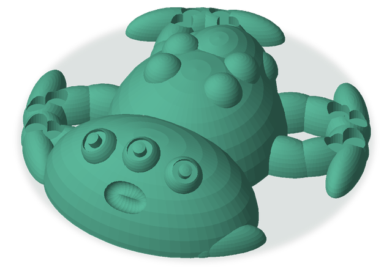
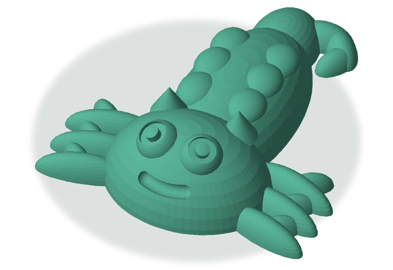
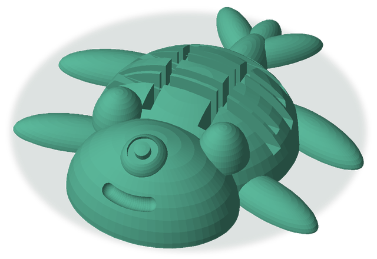
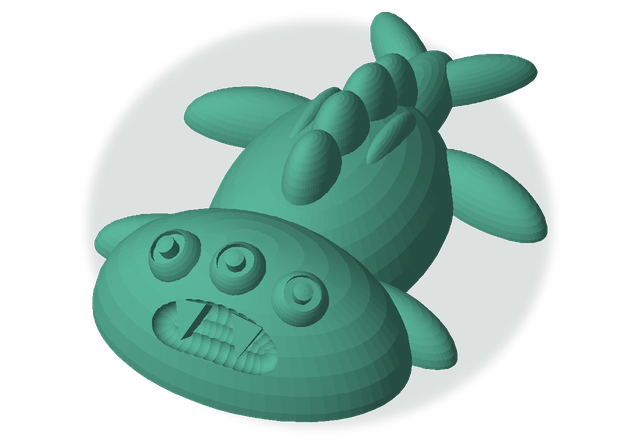

01 ドラゴンもどき
ドラゴンもどき / つのつき / 4ほんあし / ながい / 2つめ / にっこり
約32 mm · 造形3分38秒 · PLA 1.3 g
ドラゴンもどき / つのつき / 4ほんあし / ながい / 2つめ / にっこり
約32 mm · 造形3分38秒 · PLA 1.3 g
ダンゴムシもどき / まるがお / 6ぽんあし / こんぼう / 2つめ / まじめ
約32 mm · 造形3分51秒 · PLA 1.5 g
タコもどき / よこなが / まきうで / しっぽなし / 3つめ / びっくり
約29 mm · 造形4分30秒 · PLA 1.6 g
ナメクジもどき / つのつき / あしなし / くるん / 2つめ / にっこり
約32 mm · 造形4分18秒 · PLA 1.6 g
カメもどき / みみつき / ひれ / おうぎ / 1つめ / にっこり
約32 mm · 造形4分30秒 · PLA 1.9 g
ウーパールーパーもどき / よこなが / 4ほんあし / ふたまた / 3つめ / きば
約32 mm · 造形3分58秒 · PLA 1.5 g